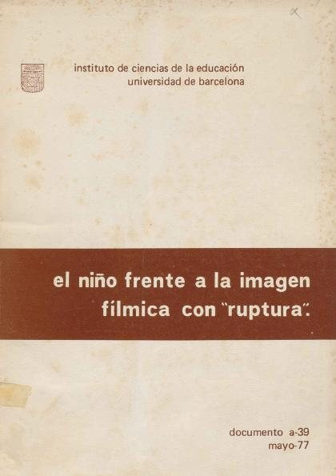

El Niño frente a la imagen fílmica con "ruptura" : (intento de aproximación semántico-pragmática al análisis de la comunicación)Marcé i Puig, Francesc; Pujagut, Lluís

El Niño frente a la imagen fílmica con "ruptura" : (intento de aproximación semántico-pragmática al análisis de la comunicación)
Marcé i Puig, Francesc; Pujagut, Lluís
Podríamos decir que a lo largo de las páginas siguientes, abordamos básicamente dos tareas paralelas. La primera de ellas es metodológica; la segunda descriptivo-hermeneutica. Dicho en otras palabras, nuestras pretensiones abarcan, por un lado, la búsqueda de una metodología adecuada para el análisis de los mensajes y de su utilización por los usuarios; por otro lado, el intento de aportar nuevos datos referentes al proceso de decodificacion de los mensajes fílnmeos. Algo positivo creemos haber alcanzado en ambos sentidos. La determinación del grado de validez de nuestras aportaciones, la deja
- Obtenido de
- Dipòsit Digital · Universitat de Barcelona
- Editorial
- Universitat de Barcelona. Institut de Ciències de l'Educació, 1976
- Licencia
- CC BY-NC-ND 3.0
- Tipo
- General · 122 páginas
Lenguaje, comunicación y cognición socialPragmática y comunicaciónComunicación, medios y creenciasPsicología de la comunicación